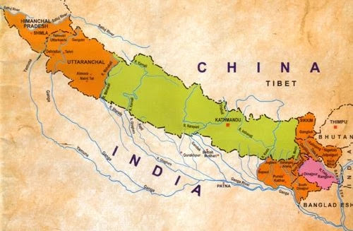

Amar Singh Thapa
He is also known living lion of Nepal.Bada Amar Singh led many conquest battles of Western provinces in the Unification of Nepal. He was leading the conquest of Langur Gadhi in Gadhwal Region before the outbreak of second Sino-Nepalese War (1791–92 A.D.)
Balbhadra Kunwar
Balbhadra Kunwar was born in Magh 17 1845 BS in Kathmandu. His father and his mother were Captain in the Nepalese military and was tasked as commander to protect the forts of Dehradun. He was highly praised for his military skill for the defence of the Nalapani fort in the Anglo-Nepalese War (1814–1816).
Prithvi Narayan Shah
Prithvi Nārāyaṇ Shah, (born 1723? —died 1775), member of the rling Shah family of the Gurkha (Gorkha) principality, Nepal, who conquered the three Malla kingdoms of Kāthmāndu, Pātan, and Bhādgaon in 1769 and consolidated them to found the modern state of Nepal. He also established the capital of Nepal at Kāthmāndu
Contribution of Nepalese women and children in Anglo-Nepal War

History
The Nepalese women were highly appreciated for their bravery shown in the battlefield. After the war, many of the wounded women and the dead bodies were taken out from the ruined walls of the fort. The furious English soldiers had blocked the source of water to the fort
Now lets see in detail.
Role Played by Brave Warriors in the Anglo – Nepal War
Balabhadra Kunwar
Six miles from Deharadun of India in the north- east on the way to Mussoorie there is a place, called Nalapani. It had been the territory of Nepal since long before the Anglo-Nepal War. Balabhadra Kunwar had built a fort on a height of 500 feet at Nalapani, which was known by the name of khalanga fort.
At the time of the Anglo-Nepal War, Gillespie, the General and Maubi, the colonel had gone to the khalanga fort with 3500 soldiers and 15 guns in their arms. They were divided into four groups for the attack on the fort from all sides. One night before the attack of the khalanga fort, Sir Robert Rolls Gillespie wrote a letter to Balbhadra, asking him to surrender. But Balbhadra tore the letter without going through it and said, ''We don't read a litter at night, I will meet with Gillespie shortly.'' In the next morning, the English side attacked the fort will guns other arms. The men and women responded from inside the fort with guns, arrows and bricks. Mr. Allis, lieutenant, who was advancing to the battlefield to encourage the English force, was killed in the gun firing of the Nepalese soldiers.
The bereave Nepalese women quenched their thirst with the water of the nearby river even amidst the dreadful situations of the gunfiring. They made their way to another fort of Jitgadh for its security.
Turning to the English before leaving the palace, Balbhadra said to them in a loud voice, "it was impossible for you to have victory over the fort, but I leave it on my own accord."
The Englishmen had, in honour of the bravery of the Nepalese people, written in a memorial stone the words like "As a tribute of respect for our gallant adversary BULBUDDER, commander of the fort and HIS BRAVE GOORKAS."
Amarsingh Thapa
Badakaji Amarsingh Thapa was a son of Bhimsingh Thapa. After the honourable death of Bhimsingh in the battle of Palanchowk, Amarsingh Thapa got this title. A son of a father who was killed in a battle was entitled to get his father's title at that time. The name of Premier Bhimsen Thapa's father was also Amarsingh Thapa but Badakaji Amarsingh Thapa was a different person. He had played an important role at the time of conquest of Baise and Chaubise states. He had expanded the western boundary of Nepal up top the Sutlaj River. The responsibility of the operation of the war in the whole west including Kumaun and Godhawal was entrusted with Amarsingh Thapa. On the side of the English, it was the responsibility of Sir David Octorlony to take care of the operation of the war. At the start of the war, Amarsingh thapa had built a fort at Ramgadh. He fought bravely for the defence of this fort.With the Anglo-Nepal War. Going against Nepal, Nepal was forced to accept the Sugauli Treaty. Frustrated with this, Amarsingh Thapa went to Gosainkunda and breathed his last there.
Bhakti Thapa
Sardar Bhakti Thapa, as a Godar Thapa of Lamjung fought against the Gorkhalese in the bettle on behalf of the army of Kehari Narayan Shah, the king of Lamjung. In course of time, he joined the Gorkhalese force. During the period of the Anglo-Nepal war, Sardar Amarsingh Thapa was controlling the operation of the war of the whole western Nepal from the fort of Malaun. To the south of this for, was the fort of Surajgadh. As the English army had the control over the fort of Deuthali, 1000 yards to Malaun fort, the security of the whole western region was at stake. This made Bakti Thapa. leave on 4 Baishakh 1872 BS (April 16, 1815) for the battle field with various kinds of knives and swords in his hand together with 2000 Nepalese soldiers amidst the fierce gun firing of the English army all around. There was a fierce gun fience fighting between the two sides. He was hit by the bullet at his heart and killed. He died a death of honour. 700 soldiers were killed on the side of the Nepalese force, while on the side of the English Army; all the officers except only one at the arsenal were killed. Octorlony, the major handed over very respectfully to the Nepalese army, the body of Bhakti thapa worn over by a costly woollen wrapper. Next morning, his body was cremated with due guard of honour. At the end of the war, it took a different turn for the Anglo-Nepal War, because the soldiers in the Nepalese force lost their hope for the better, while the English force soldiers got ever more encouraged.
Bam Shah
Bam Shah was the administrator of Kumaun, deputed there by the premier, Bhimsen Thapa. The Englishmen were taken aback at the activities taken up by him as the administrator. He was working well efficiently with the army force during the period of the Anglo-Nepal war. However, with the propaganda made by the English side about the defeat of the Nepalese force elsewhere, he could not resist the disappointment that swayed upon him. Edward Garner, aware of Bam Shah, getting dissatisfied with Bhimsen Thapa attempted to win him ho his side under the allurement of big offers to him. However, the English side failed in attempt to win Bam Shah, a true patriot of the country.
Ranabir Singh Thapa
Bhimsen Thapa's youngest brother, Ranabir Singh Thapa was on deputation to Makawanpur during the Anglo-Nepal war of 1871 BS. The army under him defeated very badly the English force. Subsequently, after the war he was appointed the administrator of Palpa and also the junior general of Kalibox and Sabuj battalion. After some time, he became a saint, known by the name of Swami Avayananda .
Ujirsingh Thapa
The premier, Bhimsen Thapa's father General Amarsingh Thapa was a governing Palpa. After the death of Amarsingh Thapa , his grandson, Nayansingh Thapa's Son, Ujirsingh Thapa became the governor of Palpa. In the battle of the Anglo-Nepal war, the English force led by the General Mr.Wood was badly defeated and driven away by Ujirsingh Thapa. The memory of his bravery is in good record of the modern history of Nepal.
Battel of Nalapani
Treaty of Sugauli
The Sugauli Treaty was superseded in December 1923 by a "treaty of perpetual peace and friendship," which upgraded the British resident to an envoy. A separate treaty was signed with India (independent by now) in 1950 which established relations between the two countries.
Map Before Treaty of Sugauli

Map after Treaty of Sugauli
What were the terms of the Treaty of Sugauli of 1815?
Negotiations for a general settlement produced a draft which was initialled at Sagauli in Bihar in December 1815 and required Nepal to give up all territories west and east of its present-day borders, to surrender the entire Tarai and to accept a permanent British representative (or 'resident') in Kathmandu.
What we lose
Negotiations for a general settlement produced a draft which was initialled at Sagauli in Bihar in December 1815 and required Nepal to give up all territories west and east of its present-day borders, to surrender the entire Tarai and to accept a permanent British representative (or 'resident') in Kathmandu.
Some Image
.jpg)